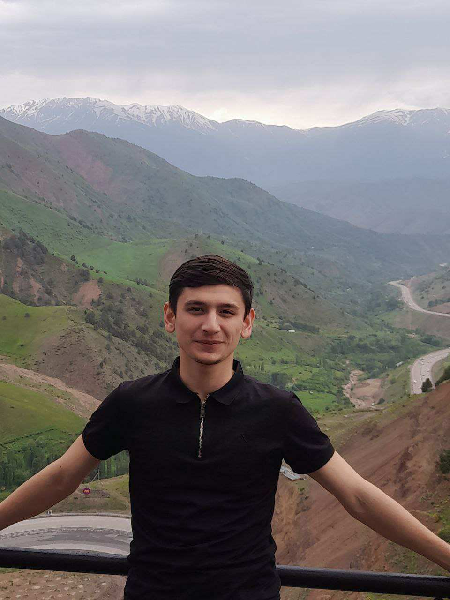

Сайт-биография
Страница про дружбу двух персонажей. Тёмная и светлая тема, иллюстрации нарисованы кодом на SVG — ни одной чужой картинки.
HTML
CSS
SVG

Начинающий веб-разработчик
HTML · CSS · Git · терминал · учусь каждый день
Пришёл в разработку с нуля — без опыта в IT. Начал с самого начала: разобрался, как устроен файл и папка, освоил терминал, научился вести историю проектов в Git.
Сейчас пишу страницы на HTML и CSS, работаю в PowerShell, веду проекты в Git и выкладываю их на GitHub. Учусь системно: каждое занятие записываю в собственный конспект, чтобы ничего не терялось.
Страница про дружбу двух персонажей. Тёмная и светлая тема, иллюстрации нарисованы кодом на SVG — ни одной чужой картинки.
Написал HTML с нуля, без подсказок: структура документа, заголовки, абзацы, кодировка. Разобрал каждую строчку — что делает и зачем.
Тренировка Git: коммиты, ветки, слияние, разбор конфликта вручную, файл .gitignore. Вся история открыта — видно, как шло обучение.